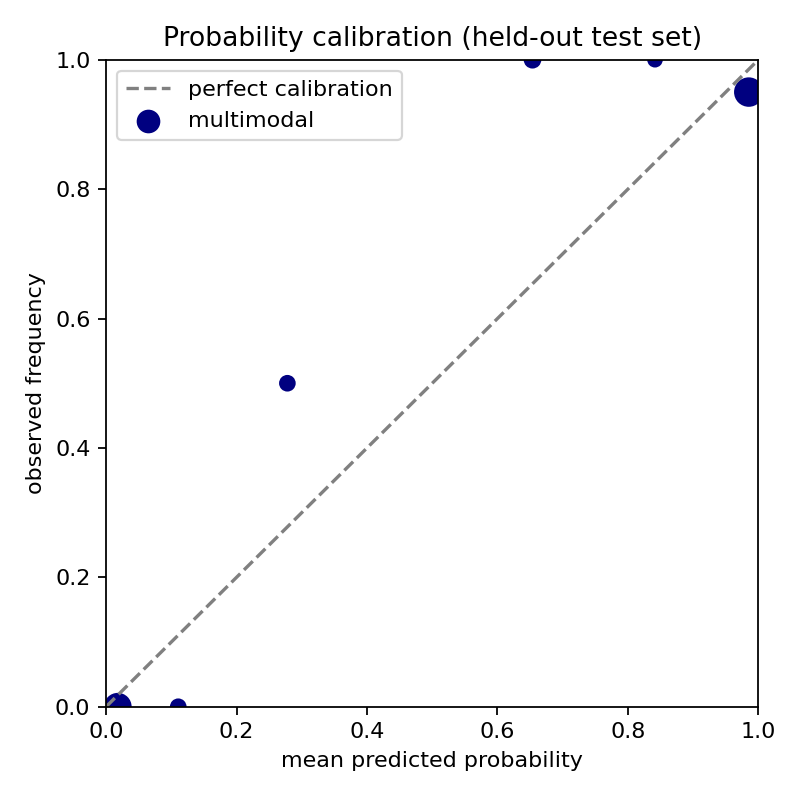

Self-contained synthetic organ-on-chip proxy benchmark; no clinical claim.
Static ROC-AUC: 0.567 · Temporal: 0.968 · Primary additive multimodal: 0.990 · Interaction ablation: 0.990




{
"count_ratio": 0.9286,
"area_ratio": 0.6093,
"intensity_ratio": 0.4108,
"elongation_ratio": 1.7115,
"motility": 1.7739,
"persistence": 0.4194,
"count_slope": -0.0909,
"area_slope": -2.5221,
"intensity_slope": -0.0183
}
flow_rate_uL_min wall_shear_proxy predicted_toxicity_probability interaction_ablation_probability predicted_viability
0.0 0.00 0.996957 0.999838 40.487884
2.0 0.36 0.986122 0.998448 44.510496
10.0 1.80 0.591260 0.483640 61.983594
20.0 3.60 0.219270 0.060330 68.358357
40.0 7.20 0.252057 0.049964 69.070649
Uncertainty is a transparent distance-from-threshold proxy and must not be read as a clinical confidence interval.